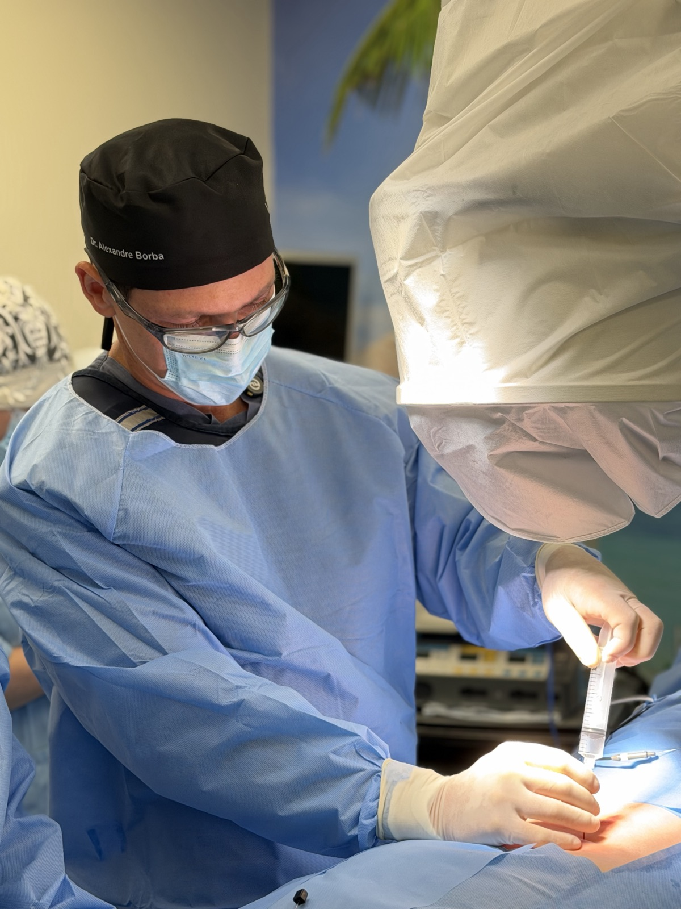
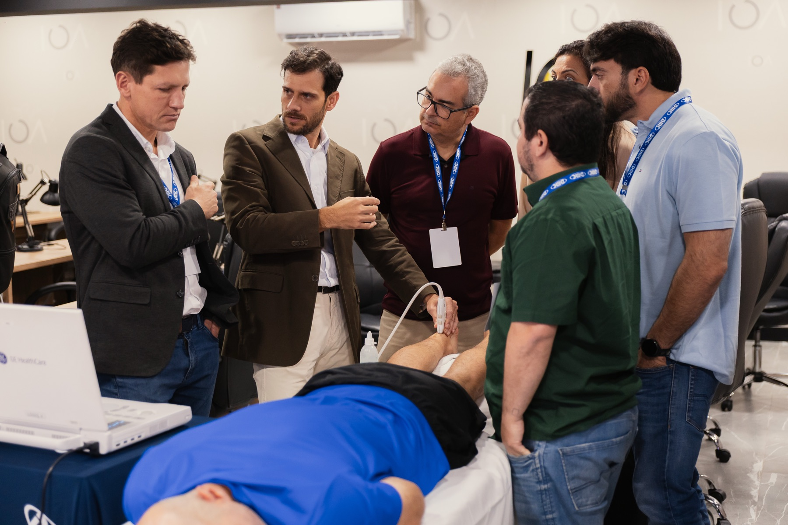
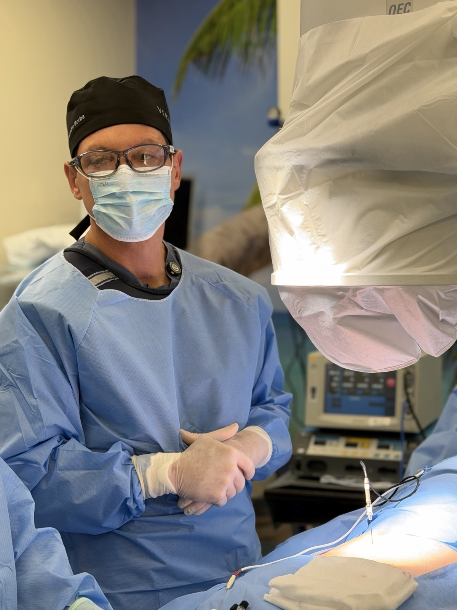

Dr. Alexandre Borba
Ortopedista e traumatologista com atuação dedicada à coluna vertebral, com foco em cirurgia endoscópica, cirurgia robótica, técnicas minimamente invasivas e medicina regenerativa. Atende em Porto Alegre.
CRM-RS 29692, RQE 20617 (Ortopedia e Traumatologia)

Formação
- Graduação em MedicinaPUCRS
- Residência em Ortopedia e TraumatologiaHospital São Lucas da PUCRS
- Treinamento em Cirurgia da Coluna VertebralPUCRS
- Fellowship em Cirurgia da ColunaAOSpine, Hospital Cajuru (PR) e San Diego (EUA)
- Mestrado em Gerontologia BiomédicaPUCRS
- Doutorado em Gerontologia BiomédicaPUCRS
- Pós-graduação em Cirurgia Endoscópica da Coluna VertebralUSP Ribeirão Preto
Títulos e sociedades
- Mestre e doutor em Gerontologia Biomédica pela PUCRS
- Pós-graduado em Cirurgia Endoscópica da Coluna pela USP Ribeirão Preto
- Ex-presidente da Regional RS da Sociedade Brasileira de Coluna (SBC)
- Ex-presidente do Comitê de Coluna da SBOT-RS (2022 a 2024)
- Membro da SBOT, da SBC e da ABOOM

Como o Dr. Alexandre trabalha
Precisão no diagnóstico, estratégia no tratamento e cuidado em cada etapa.
A maioria das dores na coluna não precisa de cirurgia. Por isso a consulta começa pela história, pelo exame físico e pela análise cuidadosa dos exames de imagem, para identificar de onde a dor vem.
Quando o tratamento clínico não é suficiente, entram os procedimentos minimamente invasivos, como bloqueios, radiofrequência e PRP. A cirurgia fica para os casos em que ela realmente muda o resultado, e sempre que possível é feita por via endoscópica ou com auxílio robótico.
No centro cirúrgico





Hospitais onde opera

Hospital Moinhos de Vento

Hospital Mãe de Deus

Hospital São Lucas da PUCRS

Hospital Divina Providência

Blanc Hospital
Agende sua consulta com o Dr. Alexandre Borba
Leve seus exames. Você sai da consulta sabendo a causa da dor e quais são as opções para o seu caso.